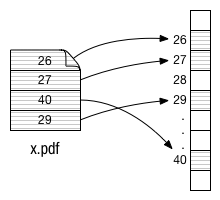

Sistemas Operacionais
História dos Sistemas Operacionais
Um sistema operacional, por mais complexo que possa parecer, é apenas um conjunto de rotinas executado pelo processador, de forma semelhante aos programas dos usuários. Sua principal função é controlar o funcionamento de um computador, gerenciando a utilização e o compartilhamento dos seus diversos recursos, como processadores, memórias e dispositivos de entrada e saída
Sem o sistema operacional, um usuário para interagir com o computador deveria conhecer profundamente diversos detalhes sobre hardware do equipamento, o que tornaria seu trabalho lento e com grandes possibilidades de erros.
1- Aspectos Gerais: O sistema operacional possui papel de destaque em um sistema computacional. Ele esconde a complexidade do hardware do usuário através do gerenciamento de uma série de dispositivos: Como por exemplo o Sistemas de I/O(Input/Output, ou E/S -Entrada/Saída), Gerenciamento de Processos, Escalonamento de CPU, Sincronização de Processos, Gerência de Memória, Memória Virtual e Sistemas de Arquivos.
1.1-O que é um Sistema Operacional: Um sistema operacional (SO) é uma coleção de programas que inicializam o hardware do computador. Fornece rotinas básicas para controle de dispositivos, processadores, armazenamento, dispositivos de entrada e saída e dados da máquina e seus periféricos. O sistema que faz comunicação entre o hardware e os demais softwares.
1.2- História dos Sistemas Operacionais:
2-Estrutura do Sistema Operacional(Monolíticos, Camadas, Máquinas Virtuais e Modelo cliente-servidor):
O sistema operacional tem uma estrutura bem complexa, devido não funcionar como um programa com inicio, meio e fim. Ele executa de forma assíncrona, ou seja, dissociado do tempo, pois é um sistema que se executa em eventos. Ele é formado por um conjunto de procedimentos que oferecem serviços aos usuários do sistema e suas aplicações. Esse conjunto de rotinas é o kernel. Existem diversos tipos de estruturas de sistemas operacionais os cinco tipos mais comuns são: sistemas monolíticos, sistemas em camadas, máquinas virtuais e microkernel (cliente-servidor).
2.1-Sistemas monolíticos: Também conhecida como estrutura simples, esta é a estrutura dos primeiros SO’s. É consistida, basicamente, por um programa dividido em sub-rotinas; na estrutura monolítica é permitido a qualquer uma dessas sub-rotinas em qualquer parte do programa chamar outra(s) sub-rotina(s). Como exemplo temos o próprio UNIX, o MS DOS, o FreeBSD, entre outros.
2.2- Sistemas em camadas: como o próprio nome já diz é feito em camadas, no qual o sistema operacional é dividido em uma série de camadas (níveis), cada qual construía sobre camadas inferiores, nela cada camada só pode requisitar serviços de camadas adjacentes. além de criar uma hierarquia de níveis de acesso que permite proteger as camadas mais internas.
As camadas são selecionadas de tal modo que cada uma delas opere diretamente com a camada seguinte de nível mais baixo. Foi originado na Holanda por Edsger Dijkstra, que utilizou o algoritmo de busca de menor caminho, também de sua própria autoria, para percorrer dentre as várias camadas, as que atenderão as solicitações de “cima”, de maneira mais eficiente. exemplo o Windows NT, o THE e o MULTICS.
2.3- Máquina Virtual (Virtual Machine – VM): É uma cópia via software que busca simular uma máquina real. pode ser definida como “uma duplicata eficiente e isolada de uma máquina real”. A IBM define uma máquina virtual como uma cópia isolada de um sistema físico, e esta cópia está totalmente protegida.
Ao invés de ser uma máquina real, feito de hardware e executando um sistema operacional específico, uma máquina virtual é um computador fictício criado por um programa de simulação. Sua memória, processador e outros recursos são virtualizados. A virtualização é a interposição do software (máquina virtual) em várias camadas do sistema. É uma forma de dividir os recursos de um computador em múltiplos ambientes de execução.
2.4-Sistemas Cliente-Servidor: São modelos de computação que distinguem dois tipos básicos de equipamentos computacionais: servidores e clientes, sendo interligados entre si geralmente utilizando-se uma rede de computadores. Neste modelo, geralmente os servidores agregam as funções mais importantes do sistema, deixando aos clientes apenas o processamento de aplicações mais básicas.
As principais características deste tipo de sistema são:
• Elevar a camada onde são implementadas as funções normalmente efetuadas pelo sistema operacional
• Reduzir as funções do sistema operacional
• Tornar menor e de mais fácil a manutenção cada parte do sistema operacional
Processo: no contexto da informática, é um programa de computador em execução. Em sistemas operacionais, processo é um módulo executável único, que corre concorrentemente com outros módulos executáveis. Por exemplo, em um ambiente multi-tarefa (como o Unix) que suporta processos, um processador de texto, um navegador e um sistema de banco de dados são processos separados que podem rodar concomitantemente. Processos são módulos separados e carregáveis, ao contrário de threads, que não podem ser carregadas. Múltiplas threads de execução podem ocorrer dentro de um mesmo processo. Além das threads, o processo também inclui certos recursos, como arquivos e alocações dinâmicas de memória e espaços de endereçamento.
A comunicação entre processos é o grupo de mecanismos que permite aos processos transferirem informação entre si. A capacidade de um sistema operacional executar simultaneamente dois ou mais processos é chamada multiprocessamento. Se existirem dois ou mais processos executados em simultâneo e disputam o acesso a recursos partilhados, problemas da concorrência podem ocorrer. Estes problemas podem ser resolvidos pelo gerenciamento adequado de múltiplas linhas de execução ou processos através da sincronização (multitarefa) ou por outros recursos (como a troca de contexto).
A execução de um processo ocorre de maneira sequencial, ou seja, uma instrução após a outra. A qualquer instante, apenas uma instrução de um determinado processo é executada. Os processos também exercem a atividade de executar operações concorrentes mesmo que possua apenas uma Unidade Central de Processamento disponível.
Embora dois processos possam estar associados a um mesmo programa, são considerados duas sequências de execução distintas. Por exemplo, cópias de um programa de correio eletrônico podem estar sendo executadas por vários usuários ou o mesmo usuário pode estar usando diversas cópias de um processador de texto. Cada um desses programas em execução constitui um processo distinto e, por mais que o texto de alguns programas possa ser o mesmo, o estado de cada um será diferente. É comum ter um processo que crie muitos processos durante sua execução, criando uma hierarquia entre processos pais e filhos.
Dentre os processos, podemos destacar dois principais tipos que estão relacionados a seu local de execução, no caso CPU e Entrada e Saída de dados.
• Processos CPU bound (orientados à CPU): são processos que utilizam muito o processador, em que o tempo de execução é definido pelos ciclos de processador.
• Processos I/O bound (orientados à E/S): são processos que realizam muitas operações de entrada e saída de dados, em que o tempo de execução é definido pela duração destas.
• IDEAL: existir um balanceamento entre processos CPU-bound e I/O-bound;
Em geral, processos de sistemas computacionais são formados pelos seguintes recursos:
• Uma imagem do código de máquina executável associado com um programa.
• Memória, que inclui o código executável, dados específicos do processo (dados da entra e saída), uma chamada de pilha (para manter a pilha de subrotinas ativas e/ou outros eventos) e um heap (alocação dinâmica de memória) para manter a computação intermediária gerada durante o tempo de execução.
• Descritores de sistema operacional que são alocados aos processo, como os descritores de arquivo do (segundo a terminologia UNIX) ou handles (usado no Windows) e os códigos e sinks.
• Atributos de segurança, tais como conjunto de permissões para o usuário que criou o processo, são as operações permitidas.
• Contexto de estado do processador, tal como o conteúdo dos registradores, memória física de endereçamento. O estado é normalmente guardado nos registradores quando o processo está em execução, e na memória principal caso contrário.
O sistema operacional mantém a maior parte da informação sobre processos dentro de estruturas de dados chamadas Bloco de controle de processos Qualquer subconjunto de recursos, mas normalmente ao menos o estado do processador, pode ser associado com cada um dos processos threads no sistema operacional, que suporte threads ou processos 'filho'.
O sistema operacional mantém esses processos separados e aloca recursos necessários para cada um deles, diminuindo as chances de um processo atrapalhar o outro (e.g., deadlock). O sistema operacional pode além disso prover mecanismos para comunicação entre processos, permitindo assim interação e comportamento mais seguro entre os processos.
Vantagens:
• Melhora o desempenho de processos que acessam frequentemente dados compartilhados.
• Os processos podem compartilhar a mesma quantidade de dados que podem endereçar.
Interface padronizada:
• Memória compartilhada System V
• Memória compartilhada POSIX
• Não permite que os processos mudem privilégios de um segmento de memória compartilhada.
Em alguns sistemas, quando um processo cria outro, o processo pai e o processo filho continuam, de certa forma, associados. Os processo filhos pode criar mais processos, formando assim uma hierarquia de processos, porém nela apenas existirá um processo pai e ter ou não um ou mais processos filhos.
Este tipo de organização dificulta a propagação de vírus em nossos sistemas operacionais, pois quando um processo pai é “morto” seja pelo sistema ou pelo próprio usuário, todos que estiverem abaixo dele na hierarquia serão mortos também.
No UNIX, um processo, todos os seus filhos e descendentes formam um grupo de processos. Exemplos da atuação de hierarquia ocorre quando há envio de sinal do teclado, onde o sinal é entregue a todos os processos associados ao teclado. Individualmente, cada processo pode capturar o sinal, ignorá-lo ou tomar a ação predefinida, isto é, ser finalizado pelo sinal. Além disso, os processos filhos não podem ser deserdados do processo pai.
Por outro lado, o Windows não apresenta esse conceito de hierarquia, nele todos os processos são iguais. Algo parecido com uma hierarquia ocorre somente quando um processo é criado. Ao pai é dado um identificador especial, que ele pode usar para controlar o filho. Contudo, ele é livre para passar o identificador para alguns outros processos, invalidando, assim, a hierarquia.
Não-Submetido: É o processo que ainda não está submetido a CPU, está nas mãos do usuário." Até onde interessa ao sistemas ele não existe, porque o usuário ainda não o submeteu. Ele é simplesmente apresentado como sendo o primeiro passo na vida de um processo. O Sistema Operacional, naturalmente, não reconhece esse estado.[1]". Pode por exemplo, ser um arquivo executável que está armazenado no HD.
Suspenso: É o processo que já foi submetido, porém permanece suspenso até que o horário ou evento programado ao usuário venha acontecer. Processo suspenso é aquele que esta no aguarde de uma entrada de dados.
Pronto: O processo já foi submetido e está pronto para receber a CPU, porém ainda aguarda o escalonador de processos para ter controle da CPU. Processos que estão esperando E/S não se aplicam a esse estado.
Executando: A execução propriamente dita. O código está sendo processado. Se ocorrer durante a execução uma requisição de E/S o processo é colocado no estado de espera e outro processo da fila de prontos poderá então concorrer a CPU.
Espera: É o processo que foi colocado na fila de espera de E/S devido ao processador de E/S ser mais lento que a CPU principal. O processo tornaria a CPU mais escrava dele se não houvesse esse estado, pois como ele não está concorrendo à CPU ao executar um E/S, pode-se então colocá-lo no estado de espera para que os demais processos do estado pronto possam concorrer a CPU.
Ex: parte de um código em C scanf(“%d”, &VALOR); SOMA=VALOR+JUROS;
Como podemos notar, a instrução scanf (uma requisição de entrada e saída) é gerada se não fosse possível colocar o processo em estado de espera; caso o usuário não entrasse com nenhum valor, o programa ficaria suspenso e não liberaria a CPU para outros processos. Completo: Neste estado temos a finalização do processo.
Há várias razões para o início de um processo, os principais são:
• Inicio do sistema;
• Solicitação de chamada de execução ao sistema de criação de processo;
• Solicitação do usuário;
• Início de um job em lote.
• Quando se cria um processo, o sistema operacional realiza os seguintes passos:
• Atribui um identificador único ao processo. Cria-se o BCP, mas só se preenche o campo do identificador.
• Atribui memória ao processo.
• Inicializa o BCP.
• Inserir o processo na lista de processos que corresponda. Por exemplo na lista de processos prontos.
• Outras operações, como atualizar todas as estruturas de controle que mantenha o sistema operacional.
Os processos podem terminar de forma voluntária e involuntária. Aqui estão alguns exemplos de motivos para os processos cessarem sua execução e sua forma:
• Saída normal: A tarefa anteriormente solicitada já terminou sua execução (saída voluntária);
• Saída por erro: O arquivo não é encontrado (saída voluntária);
• Erro fatal: é efeituado uma divisão por 0 (saída involuntária);
• Cancelamento por um outro processo: kill, TerminateProcess (saída involuntária).
BCP é a estrutura de dados que contém a informação a cerca de um processo se denomina bloco de controle de processos (BCP) A manifestação de um processo em um sistema operacional é um BCP. Um BCP é a representação de um processo durante sua execução. Um BCP é criado quando se cria seu processo associado. O conjunto de BCPs representa o estado do sistema. São acedidos e mantidos por rotinas do sistema operacional.
Elementos do BCP
• Informações importantes para o controle
• identificação do processo, estado em que ele se encontra, prioridade.
• registradores,r status
• ponteiros: pilha, código e dados
• tempos: início, de CPU, alarmes, dos filhos
• diretórios: raiz, trabalho
• descritores de arquivos
O BCP permite ao sistema operacional localizar toda a informação dos processos. O conjunto de BCP forma as tabelas de processos. O vão do processo usa-se como índice nas tabelas dos processos.
Processos ficam em estruturas que os classificam conforme seu estado. Processos Prontos à serem escalonados para a execução ficam na lista/fila de prontos.
Estados do processo em Linux: O linux trabalha com 4 estados de processo.
• Executável: O processo pode ser executado imediatamente.
• Dormente: Precisa aguardar algo para ser executado.
• Parado: Não pode ser executado.
• Zumbi: O processo é considerado "morto", mas ainda existe.
Alguns comandos que podem ser utilizados:
• Ps - Pelo comando ps é possível saber quais os processos em execução atualmente, quais os PIDs correspondentes e outros.
• Kill - O comando Kill tem a função de "matar" um processo, e é usado em momentos críticos.
• Jobs - Este comando visualiza os processos que estão parados ou executando em segundo plano.
• Bg - Coloca a última tarefa que estiver em segundo plano em execução.
Fork no Unix: O fork no Unix cria um processo filho, que diferencia-se a partir do processo pai somente em suas PID e PPID. O fork consome tempo e memória requerida para duplicar as tabelas do processo pai. Se funcionar, a PID do processo filho é devolvido para o pai e retorna-se um 0 para o filho. Caso contrário, um -1 é retornado no contexto pai, e não se cria o processo filho.
Nos sistemas operacionais do tipo Unix, encadeamento é um mecanismo baseado no conceito original de canalização: onde um pipe é uma espécie de pseudoarquivo que pode ser usado para conectar dois processos, como mostrado na figura:
Para que esses dois processos possam conversar entre si usando um pipe, primeiro, eles precisam configurá-lo. Quando o processo A quer enviar dados para B, ele escreve no pipe como se ele fosse um arquivo de saída, dessa forma o processo B pode ler os dados a partir do pipe como se ele fosse um arquivo de entrada. Resumindo, a saída de um processo pode ser usada como a entrada de outro usando um pipe.
Caso aconteça de um processo lê de um pipe e não haver uma entrada disponível, o processo é bloqueado automaticamente, até que os dados estejam disponíveis
Muitos comandos Linux podem ser usados em conjunto e em uma única linha de comando para transformar dados de uma forma para outra.
$ ls | sort | lp
O comando acima exemplifica o que é um pipe: a saída do ls irá para o sort, que ordenará o arquivo. Em seguida, a saída do sort irá para o lp que, por fim, enviará os dados de entrada para a impressora.
Podemos ainda citar outro exemplo básico, mas útil: ps aux | grep [algo] Nesse exemplo, o comado “ps aux” lista todos os processos que estão em execução no momento. Já o comando “grep [algo]” exibe as linhas de texto em que a palavra “algo aparecem. O símbolo “|” (pipe) é quem faz a comunicação entre esses dois processos: pega a saída de ps aux e a coloca como entrada para grep.
É possível criar encadeamento na programação através da chamada de sistema pipe( ), que instrui o sistema operacional na construção de um novo objeto do tipo pipe anônimo. O resultado é a abertura de dois novos descritores de arquivo no processo: um descritor para leitura no "final" da canalização e outro descritor para escrita no "final" desta mesma canalização. Estes descritores são iguais a qualquer outro descritor de arquivo, com a exceção de que não é possível executar o comando seek nos mesmos.
Para evitar deadlock e exploit de paralelismo, um processo que cria novas canalizações geralmente cria novos processos através de uma chamada de sistema do tipo fork. Cada um destes processos fecha a canalização de que não precisa mais para depois produzir ou consumir dados.
1.Sincronismo de Processos = A sincronia de processos permite gerenciar o acesso concorrente a recursos do S.O (sistema operacional) de forma controlada por parte dos processos, de maneira que um recurso não seja modificado em simultâneo, ou que os processos não fiquem em espera que o recurso seja libertado, Os processos (aplicativos ou programas) de um computador compartilham determinados recursos da chamada região crítica, que são as variáveis globais, as instruções de E/S, algum banco de dados, etc. Neste compartilhamento podem ocorrer erros.
1.2 Seção Crítica. Cada processo possui um segmento de de código, chamado Seção Crítica, onde o processo pode alterar variáveis comuns, como por exemplo atualizar uma tabela, gravar um arquivo, implementar uma lista, etc. O recurso do sistema é que, quando um processo está executando em sua seção crítica, nenhum outro processo tem permissão para executar na sua seção crítica ou seja dois processos não podem executar suas sessões críticas ao mesmo tempo. O Problema da seção crítica é projetar um protocolo que os processos possam utilizar para a cooperação. Uma Solução para o problema, precisa satisfazer os três requisitos a seguir.
1.2.1 Exclusão mútua. Se o processo Pi está executando em sua seção critica, então nenhum outro poderá executar em suas seções criticas.
1.2.2 Progresso. Se nenhum processo estiver executando em sua seção critica e alguns processos quiserem entrar em suas seções criticas, então somente os processos que não estão executando em suas seções restantes poderão participar da decisão sobre qual entrará em sua seção critica em seguida
1.2.3 Espera limitada. Existe um limite no número de vezes que outros processos têm permissão para entrar em suas seções criticas após um processo ter feito uma requisição para entrar em sua seção critica e antes de essa requisição ser atendida
1.3 Semáforos. É uma ferramenta de sincronismo que contorna a dificuldade da programação de aplicação do Sincronismo de Hardware. É um mecanismo de sincronização sem espera ativa. Para evitar a espera ativa, um processo que espera a libertação de um recurso deve ser bloqueado, passando assim para o estado de Waiting, ou seja, ele vai esperar o processo terminar de executar e liberar o recurso de que precisa para ele executar.
O semáforo inclui também uma fila de espera associada aoWaiting , esta fila contém todos os descritores dos processos bloqueados no semáforo. Quando o semáforo deixa de estar bloqueado é escolhido o processo da fila de espera do semáforo, um processo de acordo com um critério de Prioridades e de acordo com a ordem da fila LIFO (Last in, First out).
1.4 Deadlock e Starvation. A implementação de um Semáforo com fila de espera pode resultar em uma situação em que dois ou mais processos aguardam indefinidamente por um evento que só poderá ser causado por um dos processos aguardando. Quanto este estado é alcançado, considera-se que os processos estão em um Deadlock. Exemplo: Temos 2 processos P1 e P2. Digamos que para P1 executar ele precisa de um recurso que P2 libera e para P2 executar ele precisa de um recurso que P1 libera, o que resulta em um Deadlock.
Os principais eventos de que falamos aqui é aquisição e liberação de recursos, mas outros eventos podem causar Deadlock. Outro problema relacionado a deadlock é o bloqueio indefinido ou Starvation, uma situação em que os processos esperam indefinidamente dentro do semáforo. O Starvation pode ocorrer se acrescentarmos ou removermos processos da lista associada a um semáforo na ordem LIFO.
2.Agendamento (Escalonamento) de Processos = Um Escalonador de Processos é um subsistema do Sistema Operacional responsável por decidir o momento em que cada processo obterá a CPU. É utilizado algoritmos de escalonamento que estabelecem a lógica de tal decisão. Nesse momento de decidir qual escalonador será utilizado no sistema operacional, cabe avaliar o cenário que o sistema será utilizado.
Em sistemas multiprogramados, múltiplos processos são mantidos na memória principal, cada qual alternando o uso do processados. Como fator principal da multiprogramação, três tipos de escalonamento são possíveis:
2.1 Long−term Scheduling: Determina os processos que serão admitidos pelo sistema.
2.2 Medium−term Scheduling: Determina a adição de um número de processos que estão parcialmente ou completamente na memória
2.3 Short−term Scheduling: Determina quais processos serão executados pelo processador
Long−term Scheduling e Medium−term Scheduling estão diretamente relacionados com aspectos de performance, ou seja grau de multiprogramação, É utilizado quando o processo deverá ser admitido no sistema e quando tomar decisão de trocar parte do processo da memória primária para a memória secundária.
Short−term Scheduling aborda com alto grau de performance o escalonamento de processos que estão pronto para executar na memória principal.
2.4 Critérios orientados aos usuários: Estão relacionados como os usuários ou os processos quantificam o comportamento do sistema:
2.4.1 Response Time: Para um processo interativo, este é o tempo desde a submissão de uma requisição até a sua resposta. A disciplina de escalonamento deverá maximizar o número de usuários interativos em um tempo de resposta aceitável;
2.4.2 Turnaround time: Este é o intervalo de tempo entre a submissão de um processo e o seu término de execução. Este tempo inclui o tempo atual de execução mais o tempo de espera pelo recurso, incluindo a CPU. Está é a média apropriada de um Job em Lote;
2.4.3 Deadlines: Quando um deadline de um processo pode ser especificado, a disciplina do algoritmo de escalonamento deve maximizar a porcentagem da execução dos deadlines existentes;
2.5 Critérios orientados ao sistema: Estão relacionados o comportamento do sistema em si.
2.5.1 Throughput: A politica de escalonamento deve tentar maximizar o número de processos completados por unidade de tempo. Esta é a média de quanto trabalho iniciado é executado;
2.5.2 Processor utilization: Porcentagem de tempo em que o processador está ocupado. Em um sistema compartilhado, este é um critério significante;
2.5.3 Balanceamento de recursos: A politica de escalonamento deve manter os recursos do sistema ocupado; - Priority: A política de escalonamento deve favorecer os processos com maiores prioridades; Os critérios citados são ind
2.5.4 Priority: A política de escalonamento deve favorecer os processos com maiores prioridades;
Podemos definir Shell como o local onde usuários podem inserir instruções que serão executados pelo sistema operacional Linux. Essas instruções são popularmente conhecidas por comandos. O Shell é responsável por receber e interpretar funções e comandos que lhe são passados pelo usuário ou pelo próprio sistema, portanto serve de intermediário entre o usuário e o sistema operacional em si.
Na realidade, o shell é apenas um arquivo executável armazenado em /bin. No modo gráfico, um shell é executado em cada terminal aberto. O shell mais famoso de Linux é o Bash, pois o mesmo oferece vários recursos que facilitam a vida do usuário. O mais básico é o sh. Em todos estes é possível criar scripts que executam sequências de comandos, como se estivessem sidos digitados pelo usuário. Lembremos que para um usuário normal, o shell aparece com o símbolo $ . Já para o root, o símbolo é o # .
LS O ls é o comando mais básico de um shell. Ele serve para listar o conteúdo de um diretório, mostrando os arquivos que estão no mesmo.
Exemplos:
Listar o diretório atual: ls
Listar o diretório atual mostrando todos os detalhes dos arquivos: ls -l
Listar o diretório atual mostrando todos os detalhes dos arquivos: ls -a
Combinando os dois últimos comandos acima: ls -la
PWD O pwd mostra o diretório atual: pwd
CD CD vem de C hange D irectory (mudar de diretório) e serve justamente para mudar o diretório atual.
Exemplo:
pwd
/home/ivanna
cd /
pwd
MKDIR O mkdir cria diretórios:
Exemplo:
mkdir tmp
RMDIR O rmdir apaga diretórios vazios (como o tmp acima):
Exemplo:
rmdir tmp
RM O rm serve para apagar arquivos:
Exemplo:
rm imagem.jpg
Para apagar diretórios e seu conteúdo:
Exemplo:
rm -rf tmp
DU O comando du verifica o tamanho de diretórios e seus subdiretórios:
Exemplo:
du /etc

DF O df verifica o quanto você tem disponível nas suas partições e o quanto foi gasto:
Exemplo
df
Para visualizar melhor (em MegaBytes):
df -h

FREE O free mostra quanto você tem de memória RAM e swap, gastos e livres:
Exemplo
free
WHOAMI O whoami retorna o usuário logado no momento (que executou este comando): whoami
WHO O who mostra os usuários logados no sistema:
who
HOSTNAME O hostname retorna o nome do computador (na rede, ou não) que se está usando:
hostname
SU O su muda para o root ou para outro usuário: $ su
Passwd:
ou
$ su baptista
Passwd:
ECHO O echo escreve um conjunto de caracteres na tela:
Exemplo:
echo "Olha turma da ciência da computação"
Olha turma da ciência da computação
CAT O cat imprime arquivos na tela:
Exemplo:
cat
PS O ps mostra todos os processos (programas) que estão rodando na memória. Vendo os processos do usuário:
Exemplos:
ps Vendo todos os processos do sistema (de todos os usuários):
ps aux
TOP O top mostra todos os processos que estão rodando com várias outras informações do sistema:
Exemplo:
top
Informações complementares
• Os comandos digitados pelo usuário podem ser comandos internos do shell, mas na maioria das vezes eles são programas externos.A lista dos comandos embutidos pode ser obtida com o comando help. Basta digitar
o Help
• Existem vários shells para o Linux, onde cada shell tem seus próprios recursos, capacidades e limitações.
• Para ver qual é o seu shell padrão, basta digitar o comando
o printenv SHELL
O que é?
Para poder falar de escalonamento de CPU, é preciso entender de multiprogramação.
A multiprogramação consiste na execução permanente de processos. Em sistemas operacionais simples, um processo é executado até o final, enquanto outros ficam aguardando o termino para serem alocados na execução. Durante esse ciclo a CPU fica ociosa enquanto o processo aguarda um comando de entrada e saída.
Afim de otimizar esse tempo, a multiprogramação tem o objetivo de fazer com que a CPU esteja sempre executando. Diversos outros processos são armazenados na memória, quando o processo que está na CPU para, a espera de um comando de entrada ou saída, o sistema operacional transfere a execução para um dos processos da memória, utilizando o tempo de seria desperdiçado em tempo útil.
Nesse ciclo, pode se dividir os programas em dois grupos que vão ser decisivo para escolha do algoritmo para alocação, eles são: programas que depende mais de E/S (Entrada e saída) e programas que depende mais CPU.
Programas Que Depende Mais De Uso De E/S: programas cujo o tempo de processamento depende mais de operações de E/S ao invés do tempo de processamento de CPU, mesmo esse tempo de CPU tendo várias partes curtas.
Programas Que Depende Mais De Uso De CPU: programas que, em geral, tem algumas fazes que faz uso por um período muito longo de tempo de processamento.
Escalonador da CPU
É um programa do sistema operacional que seleciona um processo na memória, na fila de processos prontos, para ser executado na CPU toda vez que ociosa.
Decisão de Alocação
A alocação de processos na CPU ocorre quando muda de estado. Em dois casos não necessita de interrupção, ou seja, é não-preemptiva, também não há decisão a ser tomada pois um processo novo, caso tenha algum na fila de espera, deve ser selecionado. Isso acontece:
• Quando o estado muda de execução para espera.
• Quando o processo termina.
Nos outros dois casos é preemptivo, é preciso que uma decisão seja tomada para que ocorra alocação na CPU:
• Quando o estado muda de execução para pronto.
• Quando o estado muda de espera para pronto.
Os mecanismos de alocação preemptivo e não-preemptivo causam mudanças no núcleo do sistema operacional. Interromper a execução enquanto o núcleo faz mudanças importantes na estrutura causará grande danos.
No caso de preempção, dois ou mais processos pode compartilhar dados, então quando um fica no estado de espera o outro passa a ser executado e tenta ler uma informação que pode ser inconsistente. Para resolver esse problema, alguns sistemas operacionais não permite a mudança de contexto antes do termino da operação de E/S ou da execução de chamada ao sistema. Evitar a interrupção no núcleo permite que a estrutura fique simples e o estado consistente para o outro processo a ser executado.
Despachante
É o componente que irá fornecer ao processo selecionado pelo escalonador o controle da CPU, onde suas funções envolvem mudança de contexto, mudança para o modo usuário e desvio para endereço adequado no programa do usuário.
A latência do despacho (Tempo gasto pelo despachante ao interromper a execução de um processo e iniciar a execução de outro) deve ser muito rápido, sempre que for requisitado durante cada transferência.
Latência de alocação
Deve se levar em consideração, quanto a escola do algoritmo de alocação de CPU, as características de cada situação, caso contrário uma classe de processo pode ser mais favorecida que outros. Via de regra é preferível algoritmos que com maior valor médio de produtividade e utilização da CPU e menor valor no tempo de processamento, para isso usa se os seguintes critérios:
• Utilização de CPU
• Produtividade
• Tempo de processamento
• Tempo de espera
• Tempo de resposta
Algoritmos de Alocação
Primeiro a chegar, primeiro a ser servido Pode ser encontrado nos livros com First-in, First-out (FIFO). Esse algoritmo traz a regra bem simples em que o primeiro processo a chegar na fila de processo prontos será o primeiro a usar os recursos da CPU. Mas traz um problema, o próximo processo será executado apenas com o termino do primeiro de forma não preemptivo, dependendo o tamanho, pode consumir um tempo significativo, consequentemente deixando a fila de processos mais lenta.
Menor primeiro
Ou Shortest Job First (SJF), mais complexo que o FIFO, por outro lado, com melhor desempenho uma vez que organiza a fila de processos prontos em ordem crescente, priorizando aqueles que consome manos tempo da CPU.
O algoritmo pode executar tanto com preemptivo como não-preemptivo. Como preemptivo o escalonador estima o tempo a partir do processo a ser alocado, se o tempo de execução for maior que o estimado, o processo volta a ser reorganizado a fila.
Alocação por prioridade
O escalonador, por meio de fatores como a quantidade de arquivos utilizados pelo processo, tempo e memoria requisitadas, atribuirá prioridade aos processos executando primeiros os que tiverem maior valor.
Em determinado intervalo de tempo a prioridade dos processos são reavaliados, se preciso, troca os processos e reorganiza a prioridade da fila.
Alocação circular
Pode ser encontrado como Round-Robin, tem semelhante ao FIFO, a diferença é que o circular é preemptivo.
O Round-Robin, por predefinição, tem um tempo limite de execução, caso esse tempo não seja suficiente para um processo na CPU, ele retorna a fila para ser aguardar a próxima execução.
Alocação com várias filas
Os processos são organizados em mais de uma fila e cada fila recebe um grau de prioridade. O sistema operacional executará todos os processos da fila, desde que não haja outra fila com prioridade maior.
Sistema de arquivos: parte do SO responsável pelo gerenciamento de arquivos (estrutura, identificação, acesso, utilização, proteção e implementação). Um Sistema de Arquivos (ou File System – FS) corresponde a uma coleção organizada (geralmente em formato de árvore) de arquivos e diretórios.
Alguns exemplos de sistemas de arquivos:
NTFS e FAT32 (Windows)
ext4, BtrFS (UNIX)
OS X Extended, HFS+ (Mac OS X)
NFS, Samba, SSHFS (rede)
Para o Sistema de Arquivos, o dispositivo de armazenamento (disco, flash drive, etc.) é uma sequência de blocos de disco de tamanho fixo. O Sistema de Arquivos deve permitir localizar em quais blocos estão os dados de cada arquivo e manter um controle de quais blocos estão livres.
Definição Um arquivo é mecanismo de abstração para armazenar/recuperar dados em disco. O conceito de arquivo esconde do usuário os detalhes sobre como os dados estão armazenados e como os dispositivos de armazenamento funcionam na realidade. Assim, o arquivo é visto como sendo uma sequência de bytes apenas. Detalhes de como esta sequência está mapeada em blocos, e como os blocos estão mapeados em setores do disco ficam ocultos da aplicação. 
Identificação/Nomeação de arquivos
Nomes de arquivos:
case-sensitive (UNIX/Linux) (por exemplo, arquivos com os nomes "abc.c" e "ABC.c" podem conviver no mesmo diretório)
case-insensitive (Windows/MS-DOS/Mac OS X) (por exemplo, não é possível ter no mesmo diretório arquivos com os nomes "abc.c" e "ABC.c", pois o sistema de arquivos não faz distinção entre maiúsculas e minúsculas na identificação dos arquivos).
Geralmente, nomes de arquivos devem ter até 255 caracteres.
Extensão: Nome.ext (geralmente identifica o tipo do arquivo): facilidade para identificação do programa que é capaz de processar o arquivo.
Estrutura Arquivos são estruturados em sequências de bytes, essencialmente. Sistemas de arquivos específicos podem organizar internamente os arquivos como sequências ou árvores de registros.
(a) sequência de bytes (todos os sistemas operacionais modernos):
qualquer estruturação da sequência deve ser atribuída pelo programa que manipula o arquivo
grande flexibilidade.
(b) sequência de registros de mesmo tamanho – acesso pelo índice do registro
(c) árvores de registros (cada um não necessariamente de mesmo tamanho, e possuindo um campo-chave em posição fixa do registro – ordenação por esse campo para facilitar a busca). Objetivo: localizar registro possuindo determinada chave (sem se importar com a posição do registro no arquivo).
Tipos de arquivos (UNIX/ext4)
(a) regulares (-) : várias extensões – qualquer arquivo que armazena informações do usuário.
ASCII = arquivos-texto simples.
binários = possui caracteres sem representação para impressão na tela.
(b) diretórios (d): usados na organização do sistema de arquivos.
(c) arquivos especiais de caracteres (c): ligados a dispositivos de E/S, usados para representar dispositivos de caracteres de E/S (e.g. terminais, impressora, teclado, mouse, etc.)
(d) arquivos especiais de blocos (b): modelagem/representação de dispositivos de armazenamento (discos, CDs/DVDs, pen-drives, etc.).
Acesso a arquivos
sequencial: SOs antigos → dependente do meio físico de armazenamento (e.g., fitas magnéticas). Por exemplo, para acessar o 1000o byte do arquivo é preciso acessar os 999 que o precederam.
aleatório: a possibilidade de especificação da posição de início da leitura/escrita em qualquer ponto do arquivo.
Atributos de arquivos
Atributos são informações das propriedades de um arquivo que não estão armazenadas nos dados do arquivo.
A lista exata de atributos depende do SO, mas tipicamente inclui:
proteção: rwx...
senha necessária para abrir arquivo
criador: ID do criador do arquivo
flag "read-only"
flag ASCII/binário
flag de travamento
instante de criação
instante do último acesso
instante da última mudança
tamanho.
Um mecanismo de atributos estendidos existe na maior parte dos sistemas de arquivos e permite que atributos customizados sejam criados pelo usuário/sistema para controle de versões, segurança adicional, customização de ícones, etc.
Operações sobre arquivos
System calls para lidar com arquivos: (ver man pages – seção 2 – e roteiro de laboratório para mais detalhes):
open = create + open + append: permite criar e/ou abrir arquivos (passo necessário para manipulá-los);
creat = uma simplificação do open com as flags O_CREAT | O_WRONLY | O_TRUNC que fazem com que o arquivo seja criado, caso não existe, ou sobrescrito se já existir unlink = deleta arquivo (remove do diretório)
read
write
close
lseek = acesso aleatório (permite o posicionamento da próxima escrita/leitura em qualquer posição do arquivo)
stat: obtém os atributos de arquivos Exemplo de programa que cria cópia de um arquivo (note que a cópia é feita em blocos de 4096 bytes):
Diretórios Usado para a organização do sistema de arquivos Um diretório é uma tabela com uma entrada por arquivo. Quando um arquivo é aberto, seus atributos e endereços de disco são carregados para a memória. Assim, os próximo acessos para descobrir os endereços dos blocos de dados do arquivo são feitos na memória.
O sistema de arquivos possui estruturação em forma de árvore genérica.
Os caminhos até os arquivos podem ser:
absolutos: a partir da raiz (exemplo: /usr/bin/ls);
relativos: a partir do diretório corrente (exemplo: ../usr/bin/ls).
Esquema do Sistema de Arquivos Os dispositivos de armazenamento podem possuir várias partições, possivelmente cada uma com um Sistema de Arquivos diferente.
O bloco 0 contém a MBR (Master Boot Record). No fim da MBR está a tabela de partições do disco (identificando o início e fim de cada partição). Uma delas é a partição ativa (aquela pela qual será carregado o SO).
A criação de arquivos exige que o sistema operacional tenha controle de quais áreas ou blocos no disco estão livres. É importante o controle de quais blocos de discos estão relacionados a quais arquivos. Este gerenciamento pode ser feito, principalmente de varias formas: Alocação contígua, alocação por lista encadeada, alocação indexada e alocação combinada.
Alocação contígua: É o esquema mais simples de alocar e armazenar os arquivos no disco. O arquivo é armazenado em blocos contíguos do disco.

Suas vantagens seriam, a simplicidade: Requer saber apenas o bloco inicial e comprimento (número de blocos). Permite acesso aleatório e tem um bom desempenho.
As desvantagens são os problemas com a alocação de espaço e também, os arquivos não podem crescer.
Alocação encadeada: Alocação encadeada consiste em manter os arquivos, cada um, como uma lista encadeada de blocos de disco. Dessa forma uma parte de cada bloco é usada como ponteiro para o próximo bloco. O restante do bloco é usado para dados.
Suas vantagens: Simplicidade, requer apenas o endereço inicial.

Gerência de espaços livres, não há fragmentação externa. Desvantagens: Não permite acesso aleatório e a confiabilidade é menor.
Alocação indexada: Alocação indexada é uma forma de resolver o problema do tempo de leitura da alocação por lista encadeada. Isso é feito por meio de uma tabela de endereços dos blocos ocupados pelo arquivo. Para cada novo bloco alocado, inclui-se mais um novo item na tabela.

Usando alocação indexada, o acesso aleatório fica mais fácil, pois não é necessário percorrer todos os blocos de forma sequencial, o endereço de cada bloco fica armazenado na tabela de alocação.
A desvantagem desta abordagem é que a tabela alocação deverá ser mantida na memória principal e dependendo do tamanho dos blocos do disco ocupará muito espaço de memória o tempo todo.
Sistema de Arquivos O sistema de arquivo é responsavel por gravar e ler dados de modo organizado e com informações acessíveis. O sistema de arquivo determina como esse dados podem ser guardados, alterados e renomeados etc. Sem sistema de arquivo os dados seriam apenas conjuntos de bits sem utilidade para usuario.
Sistema de Arquivo FAT FAT é a sigla para File Allocation Table (traduzindo: Tabela de Alocação de Arquivos), o FAT foi usado sistema operacional MS-DOS em 1977 e usado até no windows 95 como padrão.
Esse sistema funciona com base em tabela, o sistema indica caminho desses dados, os espaços são dividos em blocos os arquivos podem ocupar varios desses blocos, não necessariamente os arquivos são gravados sequencialmente os arquivos podem estar em posições diferentes o sistema funciona também como guia para localização dos arquivos e montagem.
Imagem abaixo Ilustra como funciona localização de arquivo e montagem dele.

Com a vinda de dispositivos avançados necessidade de maior capacidade de arquivos o FAT foi ganhando novas versões como FAT12 e FAT16 sendo uns dos primeiros, que poucas pessoas conheçam. No entanto falta de capacidade fez FAT16 ganhar outra versão a FAT32.
Diferenças entre FAT16 e FAT32 O FAT16 utiliza 16 bits para endereçamento de dados, o sistema de arquivos pode trabalhar com até 65536 clusters, no máximo. Para chegar a este número, basta fazer 2 elevado a 16 (65536).
Se temos então até 65536 clusters e cada um pode ter até 32 KB de tamanho, significa que o sistema FAT16 é capaz de trabalhar com discos ou partições com até 2 GB: 65536 x 32 = 2.097.152 KB, que corresponde a 2 GB.
O limite do FAT32 é de 2 TB. Se fizermos a conta o valor obtido será de 128 TB, para não ter problemas na inicialização devido limitação na área do boot a Microsoft limito para os 2TB.
NTFS Uma das principais caracteristicas do NTFS é que ele permite que sistema operacional faça log dos arquivos, deixa um registro das alterações feita nos arquivos. Caso um erro conexão ou erro de gravação posso vim acontecer não ter perda dos dados fazendo restauração dos arquivos.
Suporte otimizado a metadados, listas de segurança de controle, suporte à replicação de dados, cópias para backups e criptografia são outros dos mecanismos de segurança que integram o NTFS. Este tipo de formatação cria clusters de 4 KB em partições que vão de 2 GB a 16 TB, o que gera uma maior economia de espaço em disco e também com uso de clusters de 64 KB, esse limite pode chegar a 256 TB. Por padrão, o tamanho dos clusters é definido automaticamente com base na capacidade de armazenamento do dispositivo durante o processo de instalação do sistema operacional ou de formatação de uma partição - indo de 512 bytes a 64 KB -, podendo também ser definido pelo usuário com procedimentos específicos.
As permissões de compartilhamento e as permissões de NTFS são independentes no sentido de que nenhuma altera a outra. As permissões de acesso final em uma pasta compartilhada são determinadas levando-se em consideração as entradas de permissão de compartilhamento e de NTFS. As permissões mais restritivas são aplicadas em seguida. Imagem Ilustra permissões do NTFS.
EXT2 Ext2 foi projetado e implementado para corrigir as deficiências do Ext e prover um sistema que respeitasse a semântica UNIX. A influência do UNIX pode ser vista, por exemplo, na utilização de grupos de blocos, que são análogos aos grupos de cilindros utilizados pelo FFS. O bloco, que consiste num conjunto de setores (cada setor tem 512 bytes), é a menor unidade de alocação para o Ext2. O tamanho pode ser de 1024, 2048 ou 4096 bytes e é definido na formatação.
Quando é realizada uma operação de escrita em um arquivo, o Ext2 tenta, sempre que possível, alocar blocos de dados no mesmo grupo que contém o nó-i. Esse comportamento reduz o movimento da(s) cabeça(s) de leitura-gravação da unidade de disco. Em um sistema de arquivos ocorrem dois tipos de fragmentação: (i) a fragmentação interna (ou de espaço) é causada pelo fato do tamanho do arquivo geralmente não ser múltiplo do tamanho do bloco (portanto o último bloco terá um espaço não utilizado) — a consequência é a perda de espaço; (ii) a fragmentação externa (ou de arquivo) decorre da impossibilidade do sistema determinar, a priori, qual o tamanho do arquivo (p.ex., arquivos de texto e de logs são muito modificados, e o seu tamanho pode aumentar ou diminuir) — assim um arquivo pode alocar blocos não contíguos, prejudicando o desempenho.
Para diminuir o impacto do primeiro tipo, existem duas estratégias básicas. A primeira, mais simples, é determinar, na formatação, o menor tamanho de bloco possível. O Ext2 permite tamanhos de blocos de 1024, 2048 e 4096 bytes. Um tamanho de bloco pequeno, como 1024 bytes, diminui a fragmentação e perda de espaço, mas em contrapartida gera um impacto negativo no desempenho, pois acarreta o gerenciamento de uma maior quantidade de blocos. O tamanho de bloco padrão para volumes grandes é de 4096 bytes. A segunda estratégia é alocar a parte final de um arquivo, menor que o tamanho de um bloco, juntamente com pedaços de outros arquivos. O Reiserfs chama esse método de tail packing; o UFS usa fragmentos, que são submúltiplos do tamanho do bloco. Apesar do Ext2 possuir, no superbloco, a previsão para uso de fragmentos, esse método não foi implementado.
Para diminuir o impacto da fragmentação externa, o Ext2 pré-aloca (reserva) até oito blocos quando um arquivo é aberto para gravação. Esses blocos reservados, quando possível, são adjacentes ao último bloco utilizado pelo arquivo. [CARD, TS’O e TWEEDIE, 1994]
Características Gerais do Ext2 O sistema de arquivos Ext2 foi introduzido em 1994. É uma extensão do Extended File System(Ext), inclui diversas novas características que o tornam eficiente e robusto.
Segue abaixo algumas características deste sistema de arquivos.
Ao criar um sistema de arquivos Ext2, o administrador pode escolher qual será o tamanho dos blocos(de 1,024, 2,048 ou 4,096 bytes).
Ao criar um sistema de arquivos Ext2, o administrador pode escolher quantos inodes serão permitidos para uma partição de um certo tamanho.
O sistema de arquivos particiona os blocos do disco em grupos (chamados de block groups), sendo que cada grupo possui blocos de dados e blocos de inodes armazenados em posições adjacentes.
O sistema de arquivos pré-aloca bloco de dados para arquivos regulares antes que eles estejam sendo usados. Isso existe para tentar fazer com que um mesmo arquivo tenha seus blocos em posições adjacentes, reduzindo a fragmentação do arquivo, e tempo de acesso à disco.
Permite o uso de links simbólicos rápidos, onde o nome do arquivo original é gravado dentro do próprio inode, economizando desta forma blocos de dados, porém se o pathname possuir mais de 60 caracteres o link simbólico ocupa exatamente 1 bloco de dados.
Permite deleção segura, onde os blocos de dados do arquivo deletado são sobrescritos.
Informações sobre o status do sistema de arquivos são armazenadas em um bloco especial chamado Superbloco (ou superblock). Este possui um contador interno, que é incrementado a cada boot; quando este contador atinge um determinado valor, força a ocorrência da verificação de consistência (fscheck) do sistema de arquivos.
Faz o uso intensivo do buffer cache, através do mecanismo de READAHEAD (leitura avançada): quando 1 bloco é lido, o kernel requisita a leitura de mais bloco contíguos para a cache (para garantir que o próximo bloco a ser lido já esteja na cache).
EXT3 O Ext3 (Third Extended file system) é um sistema de arquivos desenvolvido por Stephen C. Tweedie para o Linux, que acrescenta alguns recursos ao Ext2, dos quais o mais visível é o journaling, que consiste em um registro (log ou journal) de transações cuja finalidade é recuperar o sistema em caso de desligamento não programado. Há três níveis de journaling disponíveis na implementação do Ext3:
Há três níveis de journaling disponíveis na implementação do Ext3:
• Journal: os metadados e os dados (conteúdo) dos arquivos são escritos no journal antes de serem de fato escritos no sistema de arquivos principal. Isso aumenta a confiabilidade do sistema com uma perda de desempenho, devido a necessidade de todos os dados serem escritos no disco duas vezes.
• Writeback: os metadados são escritos no journal mas não o conteúdo dos arquivos. Essa opção permite um melhor desempenho em relação ao modo journal, porém introduz o risco de escrita fora de ordem onde, por exemplo, arquivos que são apensados durante um crash podem ter adicionados a eles trechos de lixo na próxima montagem.
• Ordered: é como o writeback, mas força que a escrita do conteúdo dos arquivos seja feita após a marcação de seus metadados como escritos no journal. Esse é considerado um meio-termo aceitável entre confiabilidade e performance, sendo, portanto, o nível padrão.
Embora o seu desempenho (velocidade) seja menos atrativo que o de outros sistemas de arquivos (como ReiserFS e XFS), ele tem a importante vantagem de permitir que seja feita a atualização direta a partir de um sistema com ext2, sem a necessidade de realizar um backup e restaurar posteriormente os dados, bem como o menor consumo de processamento.
Enquanto em alguns contextos a falta de funções de sistemas de arquivos “modernos”, como alocação dinâmica de inodes e estruturas de dados em árvore, poderia ser considerada uma desvantagem, em termos de “recuperabilidade” isso dá ao ext3 uma significante vantagem sobre sistemas de arquivos que possuem-nas. Os metadados do sistema de arquivos estão todos em locais fixos e bem conhecidos, e há certa redundância inerente à estrutura de dados, que permite que sistemas ext2 e ext3 sejam recuperáveis no caso de uma corrupção de dados significante, em que sistemas de arquivos em árvore não seriam recuperáveis.
1. INTRODUÇÃO
O Sistema de arquivos consiste em três partes: a interface, as estruturas de dados internas e os algoritmos utilizados pelo sistema operacional. O nível mais baixo do sistema de arquivos são as estruturas de armazenamento secundário e terciário como; a estrutura física dos discos magnéticos e fitas magnéticas,algoritmos de escalonamento de disco que objetiva melhorar o desempenho do disco,formatação e o gerenciamento dos blocos de boot,blocos danificados e swap space.
2. DESENVOLVIMENTO
2.1. DISCOS MAGNÉTICOS: Os discos magnéticos são responsáveis pela maior parte do armazenamento secundário nos sistemas do computador. Teoricamente cada prato de disco armazena as informações gravando-as magneticamente sobre os pratos. A superfície deles é dividida logicamente em trilhas circulares,como em um CD,cada trilha pode conter centenas de setores que armazenam milhares de informações.

Uma unidade de disco está conectada a um computador por um conjunto de fios, denominados barramentos de E/S, existem vários tipos destes. As transferências de dados em um barramento são feitas por controladores,esses ficam embutidos na disco e recebem o comando do computador que operam o hardware da unidade de disco.
2.2. FITAS MAGNÉTICAS: São geralmente utilizadas para backup de informações utilizadas com menos frequência e como uma forma de transferir informações de um sistema para outro. Estas fitas podem gravar dados em velocidades comparáveis as das unidades de disco.
2.3. ALGORITMOS DE ESCALONAMENTO DE DISCO: O escalonamento de disco é uma atividade feita pelo de um sistema distribuído.ele possibilita executar os processos mais viáveis e concorrentes, priorizando os tipos de processos.O escalonador de processos escolhe o processo que tem mais prioridade e menos tempo e coloca-o na memória principal, ficando os outros alocados em disco; assim não ficará ocioso.
Sobre os algoritmos de escalonamento sabemos que nenhum é totalmente eficiente e a prova de falhas, principalmente em se tratando de sistemas interativos que a todo o momento os processos são interrompidos pelo usuário. Exemplos de Algoritmos:
I. FIFO: "primeiro que entra, primeiro que sai; o primeiro que chega será o primeiro a ser executado. Desvantagens: muito sensível a ordem de chegada, se processos maiores chegarem primeiro aumentarão o tempo de espera.
II. SJF: Onde o menor processo ganhará a CPU e atrás do mesmo forma-se uma fila de processos por ordem crescente de tempo de execução. Desvantagem: baixo aproveitamento quando se tem poucos processos prontos para serem executados.
III. SRT: Neste algoritmo é escolhido o processo que possua o menor tempo restante. Desvantagem: processos que consomem mais tempo de execução podem demorar muito para serem finalizados se muitos processos com curto tempo de execução chegar.
Entre outros. Todos os algoritmos classificam os processos em estados: Iniciando, Pronto, Executando, Entrada/ Saída e Terminado.
2.4. FORMATAÇÃO DE DISCO: A formatação preenche o disco com uma estrutura de dados especial para cada setor.A estrutura dos dados para um setor consiste em um cabeçalho,uma área de dados e um término.O cabeçalho e o término são orientados pelo controlador de disco.
A maioria dos discos é formatada em baixo nível de fábrica. A formatação de um disco com tamanho de setor grande permite que menos cabeçalhos e términos serão gravados em cada trilha e mais espaço ficará disponível para o usuário.O sistema operacional registra suas próprias estruturas de dados no disco em das etapas: no particionamento e na formatação lógica.
I. Particionar: Uma partição mantém uma cópia do código executável do sistema operacional enquanto outra mantém os dados do usuário.
II. Formatação lógica: O sistema armazena no disco as estruturas de dados iniciais no sistema de arquivos, essas estruturas podem ser de espaço livre ou alocado.
2.5. BLOCOS DE BOOT: Para realizar o trabalho de inicialização ou reinicialização o boot encontra o kernel da memória e salta para um endereço que inicia a execução do sistema.Para a maioria dos computadores,o código de boot é armazenado na memória de leitura,esse local é mais prático pois a memória ROM está em um local fixo que o processador pode executar quando iniciado ou reiniciado.Como a ROM é somente de leitura não pode ser infectada por vírus.
O programa de boot completo é armazenado em uma partição que orienta o controlador de disco a ler os blocos de boot para a memória e depois executar o código.
2.6. BLOCOS DANIFICADOS: Os discos são passíveis de falhas,por vezes a falha pode ser completa.

Como alternativa para substituir um bloco defeituoso pode-se utilizar, por exemplo, um deslizador de setor. O deslizamento remapeia os setores movendo-os para uma posição adiante sucessivamente.Dessa maneira o deslizamento libera o espaço dos setores defeituosos.
2.7. SWAPE SPACE: Está relacionado a movimentação de processos entre o disco e a memória principal.O swapping ocorre quando a memória física atinge um nível muito baixo e o processos são transportados para o swap espace para liberar espaço de memória.
Os sistemas que utilizam o swap utilizam-no para manter a imagem completa dos processos. A quantidade de swap space varia de acordo com o tamanho da memória física de cada máquina.
O swap pode residir em dois lugares; no sistema de arquivos normal ou em uma partição de disco separada.
3. CONCLUSÃO A Estrutura de armazenamento de dados em massa é a utilização de vários sistemas de arquivos como quando se fala na utilização de swap ou um disco não-formatado, essas partes geralmente se encontram em partições. Uma estrutura de dados pode ser utilizado em cada uma das partes dos discos de memória como foi pontuado nesta explicação,assim como a estrutura de construção e funcionamento de discos e outras memórias que em seu conjunto detalham todo o funcionamento de uma estrutura de armazenamento utilizada pelos sistemas operacionais
1. Introdução Sabe-se que para se trabalhar em uma empresa será necessário em algum momento ou em todos os momentos a utilização de arquivos, quer seja computado quer seja manual, mas nesse caso e também com a grande evolução da tecnologia acredita-se que toda empresa hoje em dia possui uma rede de computadores onde todos os processos são interligados por meio da internet, facilita muito e agiliza o andamento da informação e o resultado é alcançado em menos tempo. Esta pesquisa irá abordar de forma resumida aspectos teóricos concernentes ao gerenciamento do sistema de arquivo, conceitos e suas características.
2. O que é um arquivo? Existem várias definições possíveis para conceituar um arquivo. Tanenbaum afirma que, de forma simplificada, que os arquivos podem ser entendidos como sequência de bytes não interpretadas pelo sistema, dependendo-se de aplicações apropriadas para sua correta utilização. Deitel coloca que arquivos são uma coleção identificada de dados.
Segundo Peter Jandl Jr. Na página 172 do livro – Notas sobre Sistemas Operacionais – “Arquivos são unidades que contém estes conjuntos distintos de dados, de formas que estes possam ser utilizados pelos processos”.
Segundo Andreza Leite na página 6 do Artigo – Sistema de Arquivos – “é um conjunto de registros definidos pelo sistema de arquivo e podem ser armazenados em diferentes dispositivos físicos”.
Arquivos são informações dentro do sistema operacional gerenciados pelo usuário, costumam ser organizados em pastas, diretórios ou qualquer outro meio especificados pelo usuário afim de facilitar o seu acesso e gerenciamento. Os arquivos são dados importantes gerados pelo usuário ou são partes do sistema operacional e precisam ser controlados afim de que não venha ser acessados por usuários não autorizados. ]
3. Sistema de Arquivos Um sistema de arquivo é um conjunto de arquivos, diretórios, descritores de estruturas de dados auxiliares gerenciados pelo sub sistema de gerencia de arquivos permitem estruturar o armazenamento e a recuperação de dados persistentes em um ou mais dispositivos de memória secundária.
Pode-se utilizar ferramentas de gerenciamento e compartilhamento para os arquivos afim de controlar o uso e garantir que essas informações não sejam acessadas por usuários de outro setor ou departamento em uma empresa. Por exemplo, o Samba é uma ferramenta livre e muito utilizada em sistemas Linux para montar servidores de compartilhamentos e gerência de arquivos.
Segundo Carlos E. Morimoto – Manual do Hardware 3º edição na página 249 “Um sistema de arquivos é um conjunto de estruturas logicas e de rotinas, que permitem ao sistema operacional controlar o acesso ao disco rígido. Diferentes sistemas operacionais usam diferentes sistemas de arquivos”.
4. erenciamento do Sistema de Arquivo Os arquivos são gerenciados pelo sistema operacional e é mediante a implementação de arquivos que o sistema operacional estrutura e organiza as informações, o sistema de arquivos é responsável pelo gerenciamento dessas informações dentro do sistema operacional. O gerenciamento de arquivos também pode ser uma função desempenhada pelo usuário por meio de ferramentas de gerenciamento de arquivos, cujo objetivo é controlar tais acessos à determinada informações que estão compartilhadas na rede.
4.1. Organização dos Arquivos
Define como os dados estão organizados dentro do sistema operacional.
• Não estruturada Consiste em uma sequência não-estruturada de bytes, o sistema de alocação não impõe nenhuma estrutura lógica para os dados.
• Indexada
O arquivo consiste em conjunto de registros. Estrutura dinâmica.
Não possui área de overflow. Inserções são feitas na própria árvore.
De acordo com uma pesquisa feita pelo professor Osvaldo Alves dos Santos pela Universidade Estadual de Maringá –UEM, em arquivos indexados os registros são acessados sempre através de uma ou mais organizações de índices, onde cada organização tem uma chave diferente para acessar os registros de dados. Tais registro estão em um arquivo separados, denominado como arquivo principal, que tem a forma de arquivo de pilha.
Pode-se dizer que o gerenciamento do sistema de arquivo é a forma de como o sistema operacional administra os dados obedecendo a ordem de prioridade, ou seja, qual informação é mais importante e precisa ter uma passagem mais aberta, administra e controla quem pode acessar tal arquivo na rede, verifica a integridade e a autenticação do usuário da qual está tentando acessar tal informação, verifica qual o tipo de arquivo, se é executável, se é de dados, se é de texto e assim por diante, para cada tipo de arquivo é preciso que haja um controle de acesso e de execução.
4.2. Sistema de Gerenciamento de Arquivo O sistema de gerenciamento de arquivo fornece e mantem o mapeamento entre as necessidades de armazenamento logico de um arquivo e a posição física onde ele é armazenado. O sistema de gerenciamento de arquivos identifica e manipula arquivos pelos nomes fornecidos por seus usuários. Ele determina os requisitos físicos dos arquivos, aloca espaço para ele, armazena-o naquele espaço e mantem as informações sobre o arquivo, de modo que elas possam ser recuperadas, parcial ou integralmente mais tarde.
O sistema de gerenciamento de arquivos monitora o espaço disponível em cada dispositivo conectado ao sistema. Dessa forma o usuário não precisa se preocupar tanto com o armazenamento dos arquivos, pois o sistema de gerenciamento trata desses detalhes.
O sistema de gerenciamento de arquivos fornece e mantem:
• Estruturas de diretório para cada dispositivo de E/S no sistema e ferramentas para acessar e explorar estas estruturas. A estrutura de diretórios permite a recuperação e o armazenamento de arquivos por nome, monitora os mapeamentos, aloca e libera espaço, permite a montagem e a desmontagem de estruturas de arquivos e provê outras funções necessárias à manutenção das estruturas dos sistemas de arquivos.
• Ferramentas que copiam e transferem arquivos de um dispositivo de E/S para outro e de um diretório para outro, mesclam arquivos, criam e exclui arquivos.
• Informações sobre cada arquivo no sistema e ferramentas de acesso a estas informações, as informações sobre cada arquivo dizem respeito ao nome, data de criação, tipo, característica dos arquivos.
Fonte: https://online.minhabiblioteca.com.br
5. Conclusão Baseado no conteúdo apresentado nesta pesquisa, entende-se que de forma resumida que o gerenciador do sistema de arquivo trabalha dentro do sistema operacional tendo a função de cuidar de como os arquivos são armazenados e manipulados, há ferramentas também que fazem o gerenciamento e controle de acesso de cada informação, cada arquivo possui seu tipo, sua descrição, seu tamanho e são identificados pelo sistema de arquivos do sistema operacional, seja Windows, ou seja Linux, sendo assim, cada arquivo é organizado pelo próprio sistema operacional.